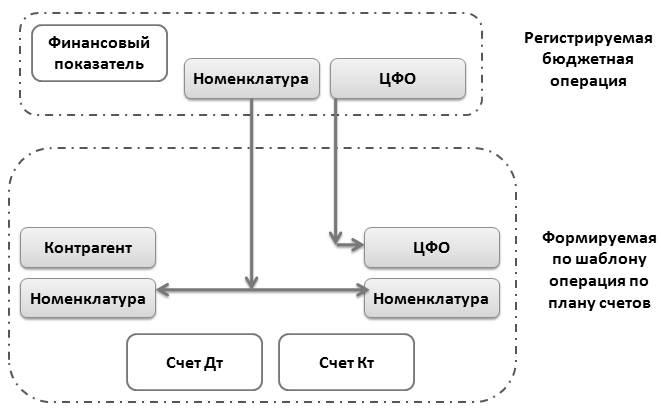

Каждому финансовому показателю может быть назначено один или несколько шаблонов. Если ему шаблоны не назначены, то его данные не будут отображаться на управленческом плане счетов. Шаблоны выбираются из справочника «Шаблоны проводок по счетам бюджетирования».
В шаблоне проводок можно указать одну или несколько проводок, формируемых на основании данных финансового показателя.
Для каждой строки шаблона указываются коэффициенты суммы и количества. На этот коэффициент будет умножены сумма/количество в операции по финансовому показателю для принятия в качестве величины операции по управленческому плану счетов.
Также указываются дебетуемый и кредитуемый счета. Помимо счетов можно заполнить значения субконто. В этом случае заполненные субконто будут заполняться в проводках фиксированными значениями. Если значения субконто не указаны, они будут взяты из данных финансового показателя. При наличии вида субконто (например, Номенклатура) и по дебету и по кредиту, это субконто будет заполнено одинаковыми значениями, т.к. берется из бюджетной операции по финансовому показателю.
